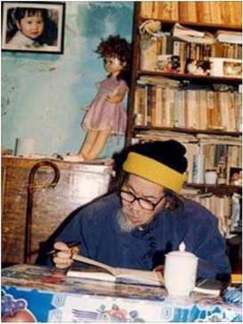

Tháng 5, anh Trần Dần vô chơi Huế, cùng đi với Phùng Quán. Trần Dần đã đến Huế lần đầu tiên vào năm 1946, lúc bấy giờ anh mới 21 tuổi; đây là chuyến giang hồ dành riêng cho tình yêu, vói một người đẹp nay đã biệt tích trong đòi.
Vừa đến Huế, trong một tuần lễ Trần Dần đã tiếp xúc vói công chúng hai lần, ở Hội Văn học Nghệ thuật Bình Trị Thiên và ở Nhà Văn hoá Thanh niên Thành Đoàn Huế. "Ở cả hai noi đó", Trần Dần thú nhận, "lúc đầu tôi cảm thấy rét vì phải đối diện với đám đông, sau đó lại quá xúc động vì tính chất thẳng thắn của nhũng câu hỏi đặt ra cho tôi. Cả hai cuộc đối thoại sau đó đều làm tôi mất ngủ." Tôi để ý thấy trong lúc nói chuyện Trần Dần thuòng dùng lại đột ngột và gõ "cộp... cộp" vào micrô, dù nó vẫn hoạt động tốt: hoá ra là từ ba chục năm nay anh không hề biết tới cái micrô, và bây giờ thỉnh thoảng anh chợt thấy im bặt, không nghe được tiếng nói của mình.
Lần thứ ba trong tuần, chúng tôi gặp lại Trần Dần trong một cuộc rượu bảy tám anh em văn chuông ở nhà Ngô Minh noi dốc Bến Ngự, gần khu vườn cũ của Phan Bội Châu. Chúng tôi quyết định tiếp tục cuộc đối thoại vói thi sĩ, trên những vâh đề gợi mở từ hai cuộc gặp gõ trước. Sau đây là câu hỏi của từng nguôi và ý kiên riêng của Trần Dần, dưói ánh đèn dầu tù mù (vì cúp điện) tôi ghi lại.
Hoàng Phủ Ngọc Tường (mở đầu): Thưa anh, con nguôi sống ai cũng cần có nhân cách, nhà văn lại càng phải có nhân cách. Theo anh nhân cách nhà văn quan trọng nhất là ở chỗ nào?
Trần Dần: Nhân cách nhà văn chính là văn cách của anh ta. Tôi không thấy mô-đen nào cho văn cách cả. Văn cách không chung cho ai. Văn là mình, không thằng nào giống thằng nào. Nó phải tự khẳng định cái Tôi của nó, không lùi một ly. Hồ Xuân Hưong, Cao Bá Quát là chính mình, không lùi một ly.
Nguyễn Quang Lập: Xin hỏi thật anh: qua thời Nhân văn, anh tự thấy anh được cái gì nhiều nhất?
Trần Dần: Được cái hoạn nạn. (Thi sĩ chợt im lặng, và tất cả chúng tôi cùng im lặng trong nỗi xúc động. Rồi anh tiếp:) Do được cái hoạn nạn nên được không dưới ba chục tác phẩm trong ba mươi năm. [Tôi xin ghi lại ở đây một số tác phẩm của Trần Dần trong yếu mục sáng tác của tác giả: Chiêu mưa trước cửa (1943), Hôn xanh dị kỳ (1944), Dạ Đài (1945), vẽ và viết báo Sông Đà, Giải phóng Tây Bắc, Giải phóng Biên giới v.v... (1946-1949), Tiếng trống tương ỉai (1954), Người người lớp lớp (1954), Nhất định thắng, Cách mạng tháng Tám (1955), Bài thơ Việt Bắc (1957), 17 tình ca (1957-1958, nằm), Cổng tỉnh (1960, thi tập, nằm), Đêm núm scn (1961, tiếu thuyết, nằm), Những ngã tư và những cột đèn (1964, tiêu thuyết, nằm), Mùa sạch (1964-1965, thi tập, nằm), Một ngày Cẩm Phả (1965, tiểu thuyết, nằm), Con trắng (1967, thơ hồi ký, nằm), 177 cảnh (1968, hùng ca lụa, nằm), Động đất tâm thần (1974), Thơ không lời - Mây không lời (1978), Thiên thanh -77 - Ngày ngày (bộ tam, 1979), 36 -Thở dài - Tư Mã dâng sao (bộ tam, 1980), Thơ mini (1987)...]
Nguyễn Quang Lập (tiếp): Có dư luận cho rằng các anh làm dự báo tốt. Nhưng văn cách thì các anh chưa thành công, theo tôi. Vì bạn đọc chưa hâm mộ như trường hợp Bác sĩ Ịivagô.
Trần Dần (một chân bị liệt cơ lại phải ngồi trên đòn, đúng dậy vịn ghế cho đỡ mỏi): Ngay độc giả của mình cũng chưa biết mình muốn cái gì. Họ nói thế, nhưng họ xác đỊnh bằng cái gì? Tiền chiên chỉ quan trọng khi họ chưa biết chúng tôi là ai. Tôi chưa có độc giả. Tác phẩm của tôi sẽ đảm bảo công chúng của tôi.
Vĩnh Nguyên: Nhật Bản có thơ haiku, anh có thơ mi ni ngắn hơn. Có người nói thơ haiku ngắn nhưng dễ hiêù. Vậy thơ mini định bắt người đọc tói đâu?
(Đêm trước ở Hội Văn nghệ, Phùng Quán đã có dịp giới thiệu thơ mini cứa Trần Dần, bài chỉ có một, hai câu. Thí dụ như thế này: Mưa rơi không cân phiên dịch, hoặc Mỗi người một vụ án - Mỗi người chôn sống một chân mẩy, vân vân.)
Trân Dần (ừ ừ... ngẫm nghĩ): Thơ haiku mọi người biết rồi. Thơ mini nay ai cũng chưa biết. Chính tôi cũng chưa biết nó là gì. Nên không thể so sánh. (Một lát, tiếp). Chống công thức là đi tìm cái chưa biết. Cái mói là cái chưa biết. Tôi đi tìm cái mói nên tôi cũng chưa biết thơ mini là gì.
Ngô Minh: Một điều anh em rất trăn trở, nhân thơ mini của anh Trần Dần. Mình muốn chữ cho đắt cho hay thì thơ lại mất đi cái lửa. Chữ trong thơ yêu cầu rất cô. Nếu không có lửa thì thơ không xúc động, nếu viết theo tình thì chữ lại dàn trải quá.
Nguyễn Quang Lập (bổ sung): Nếu chi có chữ hay thì chỉ là một bức tranh đẹp anh trình bày bằng chữ. Có lẽ đúng như thế.
Trần Dần: Nó mâu thuẫn nhau rất dữ, cái biết rồi là nghĩa, cái chua biết là chữ. Cái chua biết là cái thăm thẳm. Anh làm câu châm ngôn hay nhu Khống Tử chua phải là thơ, nghịch lý nhu Lão Tử chua phải là thơ. Nhảy qua bóng mình mới là thơ. Mình chua hiểu thơ, vì khó mà nhảy qua bóng của mình.
Hoàng Phủ Ngọc Tường: Lão Tử nói: Vô danh thiên địa chỉ thủy - Hữu danh vạn vật chi mẫu. (Vô danh là khởi đầu của tròi đất - Hữu danh là mẹ của vạn vật) Như thế có gì khác vói thơ mi ni không?
Trần Dần: Đó là triết học. Triết học cũng là thăm thẳm.
Nguyễn Quang Lập: Lúc nãy anh Dần nói sở dĩ vậy là vì anh chưa có độc giả. Nhưng thòi đó các anh có độc giả, ai cũng từng biết Người người lớp lớp, Vượt Côn Đảo, v.v... Tôi xin hỏi: nhiều người nói, nếu in lại những tác phẩm đó thì độc giả ít dần đi. Vậy là văn cách chưa đủ sống vói thòi gian. Anh Dần nghĩ sao?
Trần Dần: Thời đó là độc giả tiền chiến. Chúng tôi cướp độc giả tiền chiến và sau đó họ cấm chúng tôi, nên chúng tôi chưa kịp có độc giả. Bây giờ chúng tôi sẽ phải chiếm lại độc giả. Chứng tôi đã ba mươi năm khuất bóng.
Ngô Minh: Ba mươi năm trước các anh có độc giả. Rồi im bặt. Ba mươi năm sau anh lại ra, liệu có độc giả hay không?
Trần Dần: Chúng tôi sốt ruột in, tôi mong in để xem. Tốc độ bây giờ nhanh lắm, ba mươi năm ba thế hệ, chúng tôi chỉ là một nhịp cầu để tói thế hệ mói. Đó là một thách thức. Aragon đi mãi vói thế hệ trẻ. Chúng tôi cũng hy vọng như vậy.
Ngô Minh: Đọc lại Vượt Côn Đảo của Phùng Quán, thấy lý tưởng cao lớn, nhưng văn cách thì thế hệ trẻ bây giờ lớn hơn nhiều. Văn cách Vượt Côn Đảo rất vỡ lòng, dù tôi rất kính trọng về lý tưởng. Nguyễn Quang Lập chang hạn, bây giờ, văn cách lớn hơn nhiều...
Phùng Quán: Nếu Lập nó chi viết bằng tôi thì tôi phải đập cho nó vỡ mật...
Hoàng Phủ Ngọc Tường: Giá như Truyện Kiêu vừa mới được viết xong bây giờ, do một tác giả trẻ nào đó ở trường Nguyễn Du của Hội Nhà văn đem nộp bản thảo cho nhà Tác phẩm Mới. Liệu người ta có thèm in hay không?
Phùng Quán: Đúng quá. Bây giờ phải viết hay hơn Nguyễn Du chứ!
Hoàng Phủ Ngọc Tường: Không thể viết hay hơn Nguyễn Du nổi. Vấn đề là phải viết khác Nguyễn Du.
Trần Dần: Thế giói bây giờ mong nếu anh có được một độc giả là sướng rồi, được hai ba đọc là may quá.
Nguyễn Quang Lập: "Tôi chỉ viết cho những người bằng vai", anh Trần Dần đã có lần nói như thế. Vậy có phải anh chủ trương nghệ thuật phi giao tiếp, hoặc nghệ thuật dành cho những người đặc tuyển hay không?
Trần Dần: Không. Nhưng quần chúng văn học của anh như thế nào thì là do anh tạo ra. Do đó, tôi cho rằng, tôi viết cho những người bằng vai.
Nguyễn Quang Lập: Krapchenkô có nói rằng không nên đánh đồng tính dễ hiểu với sự tầm thường; nhưng tính dễ hiểu cũng là một đặc trung của văn học. Anh nghĩ thế nào về điều đó.
Trần Dần: Tôi không coi Krapchenkô là cái gì cả. Tất cả mọi giá trị Chân Thiện Mỹ đều là khó hiêù, trượt băng nghệ thuật cũng khó hiểu.
Ngô Minh: Độc giả ở Hội hỏi anh: thế giới anh thích ai nhất? Tiền chiến ai nhất? Thời anh, anh nể ai nhất? Sau anh, anh đọc ai?
Trần Dần: Thế giới nhiều lắm nhưng tôi nói về văn hoc Pháp. Xuất phát tôi yêu Mallarmé, Baudelaire rồi nhất là Rimbaud. Tôi tiếp tục đọc, nhưng cái gốc là ở phía trước. Dòng Rabelais tiếp tục cho đến bây giờ là Céline, hồ sơ đen số một của Liên Xô thòi Stalin. Céline là tác giả của tiêù thuyết Đi đến tận cùng đêm.
Tiền chiến Việt Nam tôi thích Vũ Hoàng Chương, Đinh Hùng, Vũ Trọng Phụng, vớt vát thêm thì còn Thạch Lam. Thòi bọn tôi, ngoài bọn Nhãn văn thì tôi chẳng còn thích ai. Hoàng Cầm là tên lãng mạn. Xuân Diệu vốn là lãng mạn tiền chiến.
Thế hệ trẻ à? Tôi cứ đợi mãi. Nó bị trong vòng vây của văn chương cung đình, tôi sốt ruột đọi lốp trẻ đủ sức lớn lên để chôn bọn tôi, như chúng tôi đã chôn tiền chiến.
Hoàng Phủ Ngọc Tường: Cho phép tôi quay lại trước một chút. Tôi e rằng anh đánh giá Đinh Hùng hơi quá, ngoại trừ việc thích hoặc không thích. Tôi có dịp đọc Đinh Hùng khá nhiều, xin lỗi anh, tôi thấy văn chương ông ta loè loẹt, có cái gì ghê ghê, như là son phấn. Nêìi tôi nhớ không nhầm thì ngay trong Thi nhân Việt Nam, Hoài Thanh cũng chỉ xếp Đinh Hùng ngồi ở "chiếu ba" trong làng văn lúc đó...
Trần Dần: Đinh Hùng thòi đó là không có chiếu gì. Nhưng Ngõ Bò (gần Bạch Mai, thời đó là nhà ông Đinh
Hùng và Vũ Hoàng Chương) là trung tâm thư hút. Ai cũng thấy Đinh Hùng là thi sĩ tượng trưng đầu tiên của Việt Nam trong Mê hon ca, Lạc Hôn ca, v.v... Thơ Đinh Hùng như thế này: Nửa mặt phù sinh nép hậu trường. Tôi thích là vậy.
Hoàng Phủ Ngọc Tường: Tôi rất thú vị về cái quyết tâm "chôn tiền chiến" của thế hệ các anh. Đọc lại văn của các anh thời đó, đã in hoặc trên bản thảo, tôi lạ lùng thấy các anh đã làm nổi cái việc khủng khiếp ấy, là vừa đánh Điện Biên Phủ, vừa "chôn tiền chiến". Tôi biết, cho đến bây giờ nhiều người trong công chúng văn học vẫn chưa hết bị ám ảnh về cái lộng ngữ "vĩ đại như tiền chiến". Dù rằng, ai cũng biết tiền chiến đã tạo ra được những thành tựu lốn lao cho đời sống văn học, so với thòi trước của nó. Tôi cũng sốt ruột mong cho sách của các anh viết thời đó, hoặc viết thầm lặng trong ba mươi năm qua, sẽ nhanh chóng được tái bản hoặc công bố, để có thể nhìn lại sự Đổi mới đích thực của văn học "sau tiền chiến". Tôi cho rằng lúc đó câu chuyện văn chưong "minh hoạ" hay "không minh hoạ" chăc lại còn nhiều điều hạ hồi phân giải.
Vĩnh Nguyên: Thưa anh ca dao như thế nào? Tôi nhớ thơ anh nói: Sấm con gái - Lúa con gái. Thế cũng như Lúa non ngáp nghé đâu bờ, hễ nghe tiếng sâm phất cờ mà lên... Vậy chính Trần Dần cũng là ca dao.
Trần Dần: Đó là di sản dân tộc, một ông thầy phải đặt ngang như Nguyễn Du, Cao Bá Quát. Phải học, để mà chôn đi.
Phùng Quán: Các anh tiếp xúc vói Trần Dần vài buổi đã thấy là bằng vai, thì ngay anh em mình trước cũng không hiểu Trần Dần. Nay hiểu, vật lộn để hiểu nhau chính là vâh đề 'bằng vai".
(Nghe Phùng Quán dùng chữ "vật lộn", tôi nhìn lại: Tất cả từ bao giờ đều đã đánh trần, trừ ông Trần Dần vẫn mặc áo, tay nào tay ấy mồ hôi ròng rã. Đêm nóng, điện cúp, nói nhỏ kẻo phiền hàng xóm, nhung mọi cặp mắt đều có vẻ gì quyết liệt.)
Nguyễn Quang Lập (đúng dậy, chống hai tay vào hông cho đỡ nóng): Tôi muốn hỏi lại, các anh đã bị đưa ra khỏi Hội Nhà văn ba năm, sau đó thành ba mưoi năm. Tại sao khi người ta yêu cầu các anh viết đơn để được vào lại, thì các anh lại viết?
Trần Dần: Lúc ấy tôi thật khó xử. Nếu theo mạch cúa tôi, thì tôi ghi vào phản-nhật-ký, là đốt hết và chết luôn, như nhà sư tự thiêu. Nhung nghĩ lại, mình tuổi già đã hết cái máu ấy rồi. Sáu mưoi ba tuổi, nếu được hoạt động hai năm nữa cũng quý rồi, cố mà ra khỏi đó. Nhung tôi biết, phục hôi thì cũng vô thưởng vô phạt, chỉ là hình thức thôi. Sau đó nhiều nguôi chất vấn tôi mà tôi không trả lời được.
Như thế quả là hèn thực. Đáng lẽ là một Silence de la mort. Đó là cách trả lời mỉni nhất.
(Tan cuộc, nhìn lại đã gần mười hai giờ khuya.)
Trần Dần (chống gậy khập khiễng ra cổng, lầu bầu): Lại mất ngủi
Bến Ngự đêm 14/5/1988
(Tạp chí Sông Hương số 31, tháng 5&6/1988)
⚝ ⚝ ⚝
(Trích hồi ký biên tập)
Đầu giai đoạn đổi mói văn học, tôi chuyên từ báo Độc lập sang làm biên tập tho cho nhà xuất bản Hội Nhà văn. Công việc mói buộc tôi phải đối mặt với những việc công luận đang chú ý đến. Thí dụ: xuất bản những âh phẩm của những tác giả lâu nay bị "treo bút".
Ngoài việc chính ở nhà xuất bản, tôi còn làm cộng tác viên biên tập cho tạp chí Tác phẩm Mới. Việc đầu tiên đánh dấu sự trả lại quyền công bố tác phẩm cho các tác giả Nhân văn-Giai phẩm là hãy in vài bài tho trên tạp chí của Hội Nhà văn. Tôi được cử đến lấy bài của các nhà thơ Trần Dần, Hoàng Cầm về in.
Tôi đến nhà ông Trần Dần ở ngay cái phố nhỏ gần nhà xuất bản. Ông ngồi trong một góc nhà thiêù ánh sáng. Ấn tượng của tôi hôm ấy là có cái gì khá đồng dạng, hài hoà giữa tâm trạng, tính khí ông và thơ ông vói góc nhà này. Gương mặt râu ria, không cỏi mở... Trước khi đưa thơ cho tôi đọc bằng mắt, ông có đọc vài câu thơ xen trong câu chuyện, có hai câu làm tôi giật mình:
Có những chân trời không có người bay Lại có những người bay
không có chân trời
Trời ơi! Mấy chục năm ở trong bóng tối mà ông viết toàn những câu như vậy thì "ghê gớm" thực! Nhung khi đọc bằng mắt cả loạt bài thì không như vậy. Nhiều bài diễn đạt hoi rối, khúc mắc. Cuối cùng bài đưa in dễ nhất lại là một chương trích trong trường ca Việt Bắc viết năm 1957. Hồi này giọng thơ của ông rất sảng khoái, sung sức, có những liên tưởng, so sánh thật mới mẻ:
Một đống Tết xa nhà
đã rỉ han lên
Hãy sống như
những con tầu
phải lòng muôn hải ỉý
Mỗi ngày bỏ sau lưng nghìn hải-cảng-mưa-bùôn
Cùng vói Cống tỉnh (thơ-tiểu thuyết) in sau đó, viết năm 1959 (đuợc tặng thuởng Hội Nhà văn 1995), tôi cảm thấy ông và nhà thơ Hữu Loan giống nhau ở chỗ: giai đoạn sáng tạo sung sức nhất của hai ông là giai đoạn 15 năm sau Cách mạng tháng Tám. Có phải sự thiếu giao luu bình thuờng sau này đã làm rối mạch tu duy sáng tạo của hai ông?
Vào cuối năm 1989, buớc vào giai đoạn tác giả có thể bỏ tiền tu in vói sự đồng ý cấp giấy phép của nhà xuất bản, thì gia đình nhà thơ Trần Dần mang tập truờng ca Bài thơ Việt Bắc tói nhà xuất bản Hội Nhà văn. Là nguôi biên tập thơ, tôi phải đọc lần đầu để có ý kiến với tác giả và tổng biên tập.
Bài thơ Việt Bắc lúc đó gồm 13 chuông. Tôi đọc kỹ: hơi thơ và các câu thơ đều nhất khí một mạch viết khoẻ khoắn, mới mẻ. Về hình thức thơ leo thang, nguôi ta có thê' liên hệ đến thơ Maiacốpxki, nhung về ý tuởng sáng tạo trong câu chữ thì chỉ Trần Dần mới viết đuợc nhu vậy. Nhà thơ mở đầu chương I với nhưng câu trữ tình, gọi kỷ niệm về mảnh đất lịch sử:
Đây! Việt Bắc!
Sông Lô
nước xanh
tròng trành mảnh nguyệt!
Và người lính coi khinh cái chết:
Ở đây
ta đã long đong
chín mùa xuân sạm lửa
đạn
như ruồi
bâu kín
gót chân đi! (trang 7)
Q n g CÓ những cách nói rất mới:
Việt Bắc
cho ta vay
địa thế
vay từ
bó củi
nắm tên
Để đẫn đến: có vay thì có trả:
Dù quen tay vỗ nợ
cũng chớ bao giờ vỗ nợ
nhân dânỉ (trang 13)
Nhũng hình tượng cụ thê’ giầu phát hiện:
Quả đất lớn mà tâm địa nhỏ
Nó chi li
từng
hạnh phúc đơn sơ (trang 21)
Những ý tưởng mãnh liệt khái quát được nhiều hoàn cảnh:
Những ngày chân trời tháp làm cánh chim hèn hạ (trang 23)
Đọc thơ Trần Dần, thấy được sự ngang tàng trong suy nghĩ của ông:
Chẳng cách nào dạy ông trời cao tít mù kia
sự
lao động đắng cay
trên mặt đất! (trang 26)
Con người ngang tàng ấy trước thiếu thốn vài trưng đoàn, vài tháng không cơm ở Việt Bắc đã trở thành:
Tôi đã biến thành
cái que gây khẳng giữa bao nhiêu que củi bạn bè tôi (trang 40)
Ông đã trải qua nhiều nỗi đau, nhưng là người có xu hướng cấp tiến, ông có nỗi đau còn lớn hơn là thấy những sức ì, gây cản trở:
Chẳng có gì đau hơn là cái sự ì! (trang 54)
Tâm đắc với những câu thơ như thế, tôi nóng lòng muốn tạo điều kiện cho ra mắt bạn đọc được sớm (mà sớm gì nữa sau hơn ba thập kỷ nằm trong bóng tối). Nhưng đọc đến chương 12, tôi bỗng giật mình: Đó là toàn bộ bài thơ Nhất định thắng...
Trong xu thế Đổi mói, thòi hạn "treo bút" vói một số tác giả đã được châm dứt, nhưng đã có văn bản nào đánh giá lại sự đúng, sai thòi gian ấy! Tác phârn đầu tiên của anh được in ra, lại công bố đúng tác phẩm đã bị phê phán kịch liệt một thòi, ai dám duyệt!
Sau thòi gian bị ghét bỏ, cô con dâu hôm đầu tiên trở lại nhà chồng, đã thay cho tiếng chào bằng câu: "Mẹ mắng con là mẹ sai!"... Chương Nhất định thắng in xen vào trường ca sẽ có cái gì tương tự như vậy.
Nếu tôi cứ tắc trách đưa duyệt, tập trường ca này không ra mắt được thì chỉ thiệt thòi cho tác giả và cho độc giả, cho nền văn học kháng chiến. Tiếc một cây có thể bỏ phí cả cánh rừng! Anh Trần Dần vốn là người ít giao tiếp, không cần hiểu cặn kẽ những sắc thái tinh tế về những việc đã qua, mình phải để anh thấy rõ...
Nghĩ vậy, tôi bèn gặp nhà tho Trần Dần, phân tích rõ, và nói thêm: "Nếu anh không đồng ý, ngày mai tôi cứ đưa duyệt nguyên vẹn, chờ ý kiến tổng biên tập!" sắc mặt Trần Dần tối lại, ông hẹn ngày mai trả lòi. Hôm sau, chống ba toong lên gác nhà xuất bản, ông nói với tôi: "Thôi được! Anh sát tình hình hon tôi, anh cứ bỏ chương đó ra!" Tôi biết ông không vui, nhưng không biết ông có hiểu sự chân thành của tôi, chỉ vì sự ra đời thuận lọi của tác phẩm, sự "tái xuất giang hồ" của ông với bạn đọc. Việc này tôi cũng trình bày với tổng biên tập lúc đó là anh Vũ Tú Nam. Anh cho cách xử lý của tôi là thoả đáng.
Trường ca Bài thơ Việt Bắc được in ra (nghe nói anh Dương Tường bỏ tiền ra in) vói số chương được đánh số thứ tự lại, còn 12 chương. Cuốn thơ tác giả đem tặng tôi có những dòng thế này:
"Gửi Vân Long,
người biên tập lại Đi! Đây Việt Bắc!
thông minh và công phu!
song tôi vẫn phản đối mọi kiểm duyệt?
Tôi đòi sự công bằng trong sáng của texte intégral.
Trần Dần."
(texte intégral: nguyên bản toàn vẹn. Ở đây tác giả vẫn gọi trường ca theo tên cũ Đi! Đây Việt Bắc!)
Đọc những dòng đó, tôi đâm ra suy nghĩ: Vậy là cụ còn hận mình? Mình là quân tốt đen xưa nay, vô hình chung bị mang tiếng là người kiểm duyệt? Dù được khen là nguôi biên tập thông minh và công phu, nhưng sao dấu chấm than lại đậm như dấu hỏi bị chữa lại? Cụ khen mỉa chăng? Tôi liền chạy sang nhà tác giả hỏi lại ông.
Nhà thơ chậm rãi: "Lúc đầu, tôi có bực mình thật. Nhưng sau thì thấy anh đúng, chân tình với tôi! Mấy câu ấy là tôi khen thật! Còn nguôi viết thì bao giờ chả muốn texte intégraV."
Nghe câu nói đó, tôi mói thực yên lòng!
Về phía ông, sau khi Công tỉnh được tặng thưởng, hẳn đã thấy thêm về sự công bằng đang được lập lại!
Lễ tang Trân Dân (Hà Nội, 19/1/1997) (trích SỔ tang)
⚝ ⚝ ⚝
Anh Dần quý mến,
Em không may mắn là bạn của anh lúc anh sinh thời nhưng vẫn luôn coi anh là bậc trưởng thượng đáng kính, đáng trọng và vẫn luôn xem anh là người gần gũi về tâm tưởng. Bước gian nan của anh đã qua. Giờ chúc anh mát mẻ nơi chín suối, để lại cho hậu duệ cứa anh một gia tài không đo đếm được.
⚝ ⚝ ⚝
Tôi được phép thay mặt gia đình và một số thân hữu của thi sĩ Trần Dần ngỏ lời cảm ơn chân thành đêh các vị đại diện và các bạn hôm nay có mặt đông đủ thắp nén nhang tưởng niệm và tiếc thương một thi sĩ vừa qua đòi.
Mới ngoài hai mươi tuổi anh đã đứng trong một trung đoàn chủ lực: nắm chắc tay súng, anh nắm chắc luôn cây bút chiến đấu trên tờ báo của bộ đội Tây Bắc, một mình xoay xở từ việc lấy tin, viết bài, vận động cán bộ và chiến sĩ gửi bài cho đến trình bày, minh họa, âh loát và phát hành đến từng đơn vị nhỏ, tay trắng làm nên một phương tiện thông tin nghị luận sắc bén trong điều kiện vô cùng thiếu thốn của một quân đội cách mạng còn non yếu. Đến nay, nhiều cựu chiến sĩ Tây Bắc già lão, đã nghỉ hưu hoặc còn mang thương tích nặng, vẫn không quên một số bài viết và tranh biếm họa của anh.
Năm 1950, anh được điều về Phòng Văn nghệ Tổng cục Chính trị. Thời kỳ này, chiến dịch Thu Đông nào cũng thấy mặt anh ở các đơn vị chủ công và các binh chủng pháo binh, công binh. Năm 1952, được giao phụ trách công tác chính trị cho các đoàn, đội văn công toàn quân tập huâh 6 tháng, anh đã mở nhiều lớp bồi dưỡng chính trị chuyên môn, được các diễn viên, cán bộ ca-vũ-kịch yêu mến kính phục. Đến chiến dịch Điện Biên Phủ, vói tư cách nhà báo nhà văn anh lăn lộn vất vả vói chiến sĩ trong các chiến hào. Giữa những ngày khói lửa gian nguy anh đã hoài thai cuốn tiểu thuyết Người người lớp lớp, tác phẩm tầm cỡ đầu tiên về chiến thắng lịch sử này, đồng thời tham gia dựng bộ phim tài liệu quan trọng Điện Biên Phủ. Sau khi tiếp quản thủ đô, Người người lớp lóp được nhà xuất bản Quân đội in vói số lượng hàng vạn bản, phát hành đến từng đơn vị, trung đội, và sau đó đuợc nhà xuất bản Văn nghệ tái bản hai lần với số luợng tuơng đuong.
Suốt đòi mình, Trần Dần sống trong một ám ảnh thuòng trực: sáng tạo, sáng tạo không ngùng.
Tôi có thểmắc nhiêu tội lỗi chẳng bao giờ mắc tội không sáng tạo - nằm ỳ
Không biết có phải vì nỗ lực sáng tác không mà cách đây hon 20 năm, anh đã suýt gục ngã do tai biến mạch máu não. Cũng may là anh đã qua khỏi để tiếp tục sáng tạo hàng trăm trang tho, truyện cho đến cách đây vài năm, khi thần kinh não của anh tê liệt hẳn, anh mói phải chịu thua SỐ phận mà ngừng viết. Trong lĩnh vực dịch thuật anh cũng có những đóng góp không nhỏ, chuyển ngữ nhiều tác phẩm văn học giá trị của thế giói và hàng loạt tài liệu triết học, xã hội học, phân tâm học...
Trần Dần luôn tâm niệm: cách mạng xã hội phải đi đôi với cách mạng văn học nghệ thuật. Cho nên, bao giờ anh cũng là nguôi tiên phong, cách tân. Cả nhóm thi hữu đồng hành của Trần Dần đều công nhận anh là nguôi tâm huyết sâu sắc nhất vói văn hoá, âm nhạc, hội họa, tâm huyết vói ngôn ngữ mà anh trọn đời vun đắp. Là nhà văn, nhà tho, chiến sĩ, anh còn đồng thời là nhà văn hoá. Nói cách khác, để dùng lại một từ anh ưa thích, Trần Dần là một Tư Mã đích thực theo cái nghĩa: văn-nhân-hiệp-sĩ đậm đà cốt cách phương Đông.
Nếu trong cuộc đời truân chuyên khổ cực của mình, Trần Dần có được một điều gì may mắn thì đó là: số phận đã dành cho anh một nguôi vợ can đảm và hiền thảo tuyệt vòi. Anh biết những công trình sáng tạo của mình đều một phần nhờ sự chịu đựng, sức chống chọi và đức hy sinh của người vợ hết lòng vì chồng, vì con.
Giờ đây, Trần Dần đã ra đi. Tôi dám nghĩ rằng còn phải một thòi gian nữa người ta mới ý thức được sự ra đi này là thiệt thòi biết mấy cho văn học và văn hoá nước nhà. Sự nghiệp anh để lại cho đòi đâu dễ gì đo được đúng tầm trong một sớm một chiều. Những gì đã được công chúng, độc giả biết đến cho tói nay, kể cả tập Bài thơ Việt Bắc in năm 1990, và tập Cổng tỉnh (được Hội Nhà văn Việt Nam tặng thưởng năm 1995) chỉ là mặt nổi của một tảng băng. Ngay các bạn thân cận nhất của anh đã mấy ai thấy hết được mặt chìm của tảng băng đó. Tiếc thương này sao có thể khóc bằng lời.
⚝ ⚝ ⚝
Hữu Thỉnh (Phó Tổng Thư ký Hội Nhà văn Việt Nam) Lời chia buồn của Ban Chấp hành Hội Nhà văn Việt Nam
Mấy năm nay, anh Trần Dần không được khoẻ. Bệnh tật đã không cho phép anh đi lại, gặp gỡ được nhiều. Nhưng anh vẫn lặng lẽ và gắng sức tham gia vào đời sống văn học. Nhiều trang viết từ những năm trước được anh xem xét, sửa chữa lại thật công phu, bên cạnh đó là những trang viết mói. Vây quanh giường bệnh và cũng là noi làm việc của anh là tình cảm ấm áp, chia sẻ và khích lệ của gia đình, bầu bạn và của những nguôi đồng nghiệp trong tổ chức văn học cách mạng mà anh có vinh dự tham gia từ những ngày đầu: Hội Nhà văn Việt Nam.
Còn nhớ những năm 1994, trong một trạng thái tinh thần thật phâh châh, anh vui vẻ đáp lời mòi cúa ban biên tập tuần báo Văn nghệ đến dự cuộc gặp mặt rất cảm động của các văn nghệ sĩ-chiến sĩ tham gia chiến dịch Điện Biên Phủ lịch sử nhân kỷ niệm 40 năm ngày quân ta toàn thắng ở Điện Biên, tác giả Người người lóp lóp đã được đón tiếp thật nồng nhiệt và trang trọng.
Cũng dịp này năm ngoái, anh xuất hiện ở trụ sở Hội Nhà văn để đón nhận tặng thưởng của Hội Nhà văn cho tập thơ Cổng tình. Những phút gặp gỡ thân thiết và bịn rịn nói lên một phần tình cảm của những bạn văn và bạn đọc dành cho anh. Là nhà tiểu thuyết, nhà thơ, dịch giả văn học và nhiều năm làm cán bộ văn nghệ trong quân đội, việc nào anh cũng dồn hết tài năng và nghị lực. Đến nay nhiều người còn ngạc nhiên vì sao tiểu thuyết Người người lớp lớp lại được viết nhanh gần như ngay sau khi chiến dịch Điện Biên Phủ kết thúc. Đặc biệt đối với thơ, anh luôn luôn tìm kiếm và tự đổi mới, phấn đấu sao cho vói một phuơng tiện ít nhất có thể chuyên tải đuợc tối đa.
Anh Trần Dần kính mến,
Sinh tử là luật trời không ai có thể vuợt qua. Nhung nhà văn có thể kéo dài cuộc sống của mình bằng văn nghiệp. Năm tháng trôi qua, nhung nhũng trang văn hào hứng và tâm huyết của anh về cuộc kháng chiến vĩ đại của dân tộc sẽ còn lại. Trong lúc toàn giói văn học đang gấp rút kỷ niệm 40 năm ngày thành lập Hội Nhà văn, anh Trần Dần mất đi là một tổn thất to lớn cho gia đình và cho làng văn chúng ta. Thay mặt Hội Nhà văn Việt Nam, chúng tôi xin kính cẩn nghiêng mình vĩnh biệt anh và chia buồn sâu sắc cùng chị Khuê và toàn thể tang quyến.
Xin cầu chúc anh đuợc yên nghỉ, anh Trần Dần kính mến. Vĩnh biệt anh.
⚝ ⚝ ⚝
Anh em chúng tôi mỗi nguời một tính một nết thuờng có những đánh giá khác nhau về những sự việc cũng nhu con nguôi, nhung chúng tôi đều nhất trí ở một diêm: Trần Dần vuợt tất cả chúng tôi một đầu về lòng tận tụy chữ.
Ngày vã mồ hôi dịch sách, đêm lại thức mờ mắt tô ảnh mầu để kiếm sống nhưng rảnh một phút là Dần lại viết, viết hăm hở viết mải mê như có một nhà sách nào ứng tiền trước đương giục bản thảo để đưa nhà in. Tôi còn nhớ một buổi chiều mùa Đông, Dần nhờ tôi đi vay tiền không được, tôi đạp xe đến trả lòi thì thấy Dần ngồi trong góc nhà tối bên ánh sáng leo lét một ngọn đèn Hoa Kỳ thắp hạt đỗ để tiết kiệm diêm hút thuốc lào. Mặt Dần rạng rỡ như mặt một người vừa trúng xổ số kiến thiết loại độc đắc. Hay Dần vay được tiền rồi!
Không phải - Dần đương đọc, và sửa thơ Đặng Đình Hưng - Dần hớn hở: - Thằng Hưng có câu thơ đã quá:
Tìm một cái ao
ngồi giặt áo cả ngày
Và Dần say sưa bàn với tôi về thơ hiện đại, như tất cả trên đòi này chỉ có thơ là điều duy nhất đáng bận tâm. Một niềm vui thanh cao như thế không nên bị những lo toan khốn khổ về sinh nhai khuấy đục. Ngay tối ấy tôi đã chạy khắp nơi nhờ người vay tiền vói lãi suất cắt cổ để kịp đưa cho anh.
Tôi có trả lời phỏng vâh một nhà báo nước ngoài: Thơ hiện đại vô dụng và cấp thiết. Vô dụng vì nó hoàn toàn không đem lại đô la nuôi sống người làm thơ, nhưng cấp thiết vì nó to gan chống lại cơn lũ thị trường đương hung hăng đe doạ, hàng hoá xã hội cuốn phăng mọi giá trị tinh thần và nhân phẩm. Giữa lúc đồng tiền lộng hành, nạn hàng lậu, hàng dỏm có nguy cơ bành truớng trên quy mô quốc gia, giữa lúc không ít những ngòi bút thi chạy tốc độ theo màu xanh quyến rũ và ma quỷ của đồng đô la, một nguời hải quan già trung thực triệt để và có bản lĩnh ở cửa khẩu chữ, một nguôi lão bộc cung cúc tiếng Việt nhu Trần Dần mói cần thiết làm sao!
Nhung ông tròi thuờng oái oăm và đòi nhà thơ nhiều lận đận. Hôm nay Trần Dần mới vĩnh biệt chúng ta, nhung thật ra nhà thơ Trần Dần đã kề cái chết từ gần hai muoi năm truớc. Một cơn tai biến não đã hủy hoại dần những khả năng trí tuệ của anh. Hình nhu linh cảm truớc thảm họa vói giác quan thứ sáu vốn cực nhạy cảm ở một nhà thơ, trong thòi kỳ sung sức Trần Dần đã lao lực viết nhu một kẻ tội đồ của chữ. Anh để lại nhiều tập thơ và văn xuôi cũng nhu nhiều sổ tay thể nghiệm. Tôi không biết số phận dành cho khối những di cảo bất hạnh này nhu thế nào, nhung vốn là một nguôi làm thơ lạc quan ngoan cố, tôi đinh ninh rằng không một câu thơ thứ thiệt nào lại có thể bị mai một, truớc sau nó cũng tìm đuợc một tâm hồn tri kỷ, nhu vì sao tắt ngàn năm, tấc lòng chờ vân thông tin sáng.
Suốt đời Trần Dần canh cánh những khoản nợ
Tôi mắc nợ
khoảng trời Bát-đát
Nợ rặng đèn
khu phô'Brốt-oay
Nợ Hông quân
nợ cánh anh đào Nhật Bản
Nợ tất cả những gì
tôi chưa hát được thành Thơ
Những câu thơ dịch Maia mà không ai nỡ nghĩ là những câu thơ dịch đơn thuần.
Giờ chua phải lúc nhìn lại nhung tôi mong, tôi tin rằng nhà thơ có thể thanh thản ra đi.
Trần Dần, vì lòng khắc khoải cách tân yêu dấu yêu chữ thiết tha của mày, tao xin thay mặt anh em tiễn mày một lậy!
Nguyễn Đình Thi (Chủ tịch ủy ban Toàn quốc Liên hiệp các Hội Văn học Nghệ thuật Việt Nam
Vĩnh biệt anh Trần Dần, nhà thơ tâm huyết và tài năng, nguời bạn đồng đội từ Sơn La và Điện Biên Phủ những năm tháng không thể phai mờ.
Nguyễn Khoa Điềm (ủy viên Trung uơng Đảng, Bộ truởng Bộ Văn hoá-Thông tin, Tổng Thu ký Hội Nhà văn Việt Nam
Vô cùng thương tiếc nhà văn, nhà thơ tài năng Trần Dần, tác giả của tiêù thuyết Ngiĩời người lớp lớp, trường ca Cống tỉnh. Kính mong hương hồn nhà thơ yên tĩnh ở cõi vĩnh hằng.
⚝ ⚝ ⚝
Hôm nay, gia đình và bạn hữu bắt đầu cuộc vĩnh biệt Trần Dần: nhập áo quan sau khi khâm liệm. Tôi khóc, không nói được câu đứt ruột.
Thương nhớ Trần Dần, con người nghĩa hiệp, vì nước vì dân, dù phải chịu một sự hiểu nhầm tai hại đưa đến hai phần ba cuộc đời cay đắng, tàn lụi. Nhưng thời gian sẽ trả lại cho anh sự công bằng, hậu thế sẽ nhắc đến anh với lòng mến phục. Lần đầu gặp anh trong cuộc phê bình tập thơ Việt Bắc, đến nay dù hơn bốn muôi năm, biết bao là gian nan, trong nhũng cố gắng chung đê tìm cho văn nghệ Việt Nam một con đường phát triển thuận lọi nhất. Đúng hay sai, hôm nay tôi vẫn chưa dám khẳng định... Dù sao, thiện chí cúa chúng ta chỉ có kẻ ác ý mói cố tình phủ nhận.
Tiễn đưa anh về cõi vĩnh hằng, có lẽ tôi chỉ có thể nhắc lại cùng anh vế đối của Ngô Thì Nhậm nói cái lẽ tất yếu: Gặp thì thế, thế thì phải thế. Trong vũ trụ bao la vô cực, trái đất này chưa đáng là một hạt bụi. Sống trên trái đất, chúng ta đã sống hết mình không cầu danh, trục lợi, thế là đủ. Cả
nước biết lúc nào anh cũng có tư tưởng nhất định thắng, dù cho ý chí ấy anh không đạt được thì cũng vẫn là phẩm giá cao đẹp của một con người ở thế gian. Nói với hưong hồn anh về điều đó, tôi không thê’ không nghĩ đến câu hỏi thông thường mà người ta hay đặt ra cho một cuộc phâh đấu lổn: Cuối cùng thì đi đến đâu? Cuối cùng mình được cái gì? Đê’ trả lời tất cả những người có đầu óc thiết thực đó, tôi xin mượn câu danh ngôn cứa Lessing, nhà văn Đức nổi tiếng ở thế kỷ 19: "Giá trị một con người không ở cái chân lý mà người ấy có hay tưởng có, mà ở cái công sức mà người ấy đã bỏ ra đê’ tìm kiếm nó."
Anh đi nhé và sẽ hưởng hạnh phúc lâu dài ở thế giới bên kia.

Trần Dần, những năm cuối đời